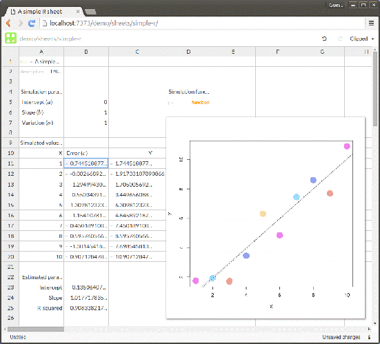
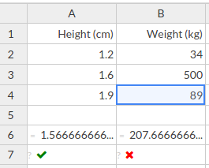

A feature list for Stencila Sheets
Michael , Oliver and I have been planning the next six months of development and user testing on Stencila Sheets. We’re keen to get input from the community on which features should put in, and which we should leave out, and the relative priority for each.
The plan is to implement initial versions of these features over the coming months, ready for a first round of user testing in early November. Based on that feedback, we’ll know which features need more work, and potentially, which features should be dropped.
For background on Stencila Sheets check out last year’s blog posts:
- Spreadsheets are dead, long live reactive programming environments! - an overview and rationale
- Getting under Stencila sheets - more technical details
We’ll link to some relevant Github issues below. We’d love any comments either on those specific issues, or right here in this forum topic!
-1. Conventional spreadsheet features that Stencila Sheets won’t have!
“Knowing what to leave out is just as important as knowing what to focus on.” - Warren Buffet
One of the fundamental principles of Stencila Sheets is to provide users an environment for conducting reproducible research within a interface that they are already familiar with - the spreadsheet. But we’re not just trying to create an open-source version of Excel - that already in exists e.g. LibreOffice Calc.
We want to create spreadsheet software that is built from the ground up for reproducibility and which addresses some of the shortcomings of using spreadsheets for data analysis. Part of that process is taking the great things about spreadsheets (e.g. a reactive programming environment) and leaving behind the things that lead to errors. That’s why this section is numbered -1.
We want to make Stencila Sheets more semantic and data-centric and less layout and formatting centric. So, some spreadsheet formatting features you won’t see in Stencila Sheets include:
- font face and font size menu items
- text and background colour menu items
- cell border style, colour and width
By not allowing ad hoc formatting of cells we hope to focus the user on the types and structure of data and formulae in the Sheet. It also allows us to use styling attributes to visually distinguish different types of data and cell types. We do plan to have a conditional formatting feature but this will be very much data-driven (see below).
0. Conventional spreadsheet features that Stencila Sheets will have!
Continuing with our section numbering scheme, this section is numbered 0 because it’s about implementing the basic interactions and functionality that users expect in a spreadsheet. There is of course a long, long list of spreadsheet features but initially we’re focused on the basics of creating, updating, selecting and deleting cells and entering data and formulae. Over time we’ll be adding more of the advanced features that users expect from spreadsheets (e.g. plotting).
Oliver and Michael have already made good progress on this. Check out the screenshots - it’s basic functionality, but foundational to establishing a user interface that users are already familiar with! And there’s a lot of thought gone into making it these foundational interactions efficient and extensible.
For all of these “conventional” features, we plan on sticking close to existing spreadsheet interface conventions. Microsoft Excel and Google Sheets have had a lot of user interaction research put into them and provide really good examples to follow. Users are already familiar with them and it seems wasteful and unnecessary to reinvent the wheel. Instead, we’ll put that energy into the novel features of Stencila Sheets that we think make them more suitable for reproducible research…
1. Harnessing the power of open-source languages for scientific computing
1a. Allowing users to use cell expressions in external languages
The initial idea that sparked Stencila Sheets was to take the model of the computational notebook - code cells embedded within a document - and apply it to the spreadsheet interface. Here’s an example of the first prototype of Stencila Sheets with cell expressions written in R:

We have overhauled the architecture of Stencila so that there is greater decoupling between the user interfaces and the code execution contexts. We also have a useful abstraction layer for passing data between execution contexts. These changes now allow us to have Sheets with cells in a variety of languages.
To allow cell expressions to be written in external languages such as R will require us to revisit our approach to processing of expressions to expand out cell ranges such as A1:A10. For more details, see
this GitHub issue
.
A more advanced but potentially powerful feature related to external languages is “projecting” tabular data values onto the Sheet. For example, one group of columns might be generated by an SQL expression which extracts data from a database, another cell might fit a linear regression model to those data using R. We would need some sort of cell “projection” or “mapping” so that, in this example, if the SQL statement returned tabular data of 10 rows x 5 columns, it would be projected across the 50 adjacent cells. For more details, see this GitHub issue
1b. Allowing users to write functions in external languages
The other big change in Stencila in the last year is the introduction of Mini. Mini, as it’s name suggests, is a small, simple, purely functional language similar to Excel’s cell formula language.
Mini will allow users to define functions using external languages. This allows more complex code that does not easily fit into a cell to be edited and promotes resusability. It allows users to quickly wrap powerful functionality available in other languages and makes them accessible to other Stencila users. For example a Mini lasso function for Lasso Regression could be written using R’s glmnet package.
As one reader of our initial blog post suggested:
Functions should not ‘live’ in cells. Function definitions should simply be part of the spreadsheet’s code. The text-representation of the sheet would include not only a series of cell definitions (coordinates of cells and their contents) but proper functions as well. - https://thoughtstreams.io/joeld/problems-with-excel/10205/
It’s an idea Michael expanded on in his post .
For a discussion of implementation of this, see this issue
2. Strong typing of cells, columns and rows
One of the biggest problems with most spreadsheet implementations is “weak typing” - cells can contain any type of value. This combined with auto-conversion can lead to problems like the recently publicized corruption of gene data .
One of the great ideas that
Oliver
has come up with recently is adding strong typing to Sheets. Users could specify that a column, row, cell range or cell was of a particular type (e.g. date, string). If data was entered into the cell, or a cell formula returned a value, which did not conform to the specified type the cell would show an error. Cells with specified types could be visually distinguished (e.g. by colour, or small icon in the corner).
Strong typing would be optional but could be encouraged by providing users with a metric of the proportion of cells that were strongly typed as an indication of the sheet’s “robustness”.
3. Distinguish between static and dynamic cells
Distinguishing between cells that are static (a.k.a constant, data) and those that are dynamic (i.e. cells starting with an = sign, a.k.a. expressions, formulae) could also reduce the error rate of spreadsheets by clearly separating data from code. Again, this could be done by using colours or icons (the first prototype used a small equals sign in the top left).
4. Naming cells, columns and rows
Named cells and cell ranges is a feature available in Excel. It makes cell expressions more readable and less error prone. We want to extend this approach to the ability to name entire columns (and possibly rows). When combined with strong typing this would allow for sheets to be used to edit well defined tabular data, for example, conforming to the Frictionless Data Tabular Data Specification .
5. Clone cells
One of the biggest sources of errors with spreadsheets is when cell formulae are copy and pasted, or dragged into adjacent cells. Software like Excel will create copies of the formula with cell references updated, so that for example if cell B1 has the formula =A1*2, when it is copied into cell B2 the formula is updated to =A2*2. That’s great until you want to change the formula, then you have to remember to update all the copies as well - that can be error prone.
To solve that problem Ernő Zalka suggested the idea of “shadow” or “clone” cells .
6. Test cells
One often cited criticism of spreadsheets is that they are not testable. In our initial blog posts on Stencila Sheets we discussed how it is fairly straightforward to introduce testing to spreadsheets by allow cells to be marked as “test” cells.
These cells would have an expression which represented a test assertion e.g. = B1 >= 0 && B1 <= 100 to test that the percentage calculated in cell B1 is valid. In our initial prototype we indicated test cells using a ? mark and a tick or cross for pass/fail:

We also were able to generate test coverage statistics for the sheet.
7. Conditional formatting
Although we want to make Stencila Sheets more semantic we think there is potential value in data-driven, conditional formatting. Conditional formatting can allow easy identification of outlier data and out-of-expected-bounds expression values. It is in effect a form of data visualization.
Conditional formatting would not allow users to arbitrarily format cells. Instead they would need to specify a set of mappings (or “rules”, or “encodings”) between a cells value and it’s style (probably a restricted set of styling attributes e.g background colour, text colour, text weight). For more details, see this GitHub issue .
Over to you!
Please give us your suggestions! It’s your chance to have a say on where Stencila Sheets is heading. Tell us which of these features you think are most important, which are unnecessary, and which need changing.
To help us prioritize, vote for the seven features that you think should be the highest priority (leaving two out). And reply to this post to give us your additional thoughts!
- 1a Allowing users to write cell expressions in external languages
- 1b Allowing users to write functions in external languages
- 2 Strong typing of cells, columns and rows
- 3 Distinguish between static and dynamic cells
- 4 Naming cells, columns and rows
- 5 Clone cells
- 6 Test cells
- 7 Conditional formatting
- 8 Constraints (see below)
To vote please visit this post on our community forum .